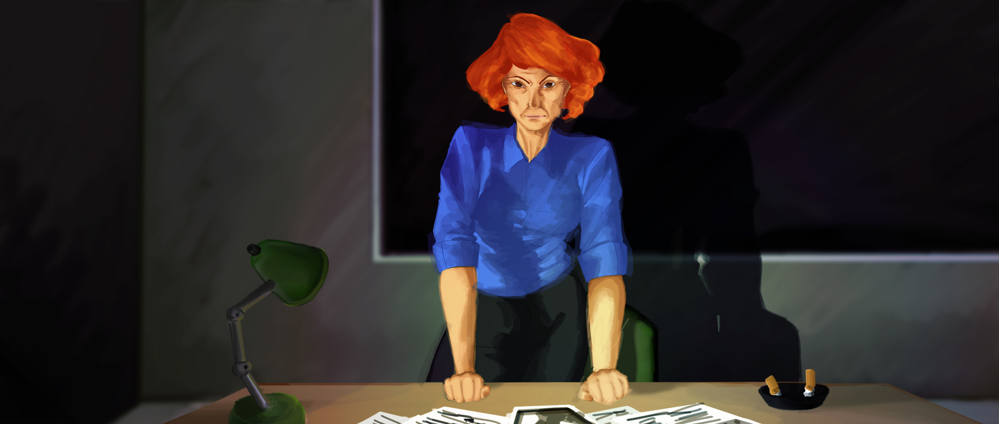
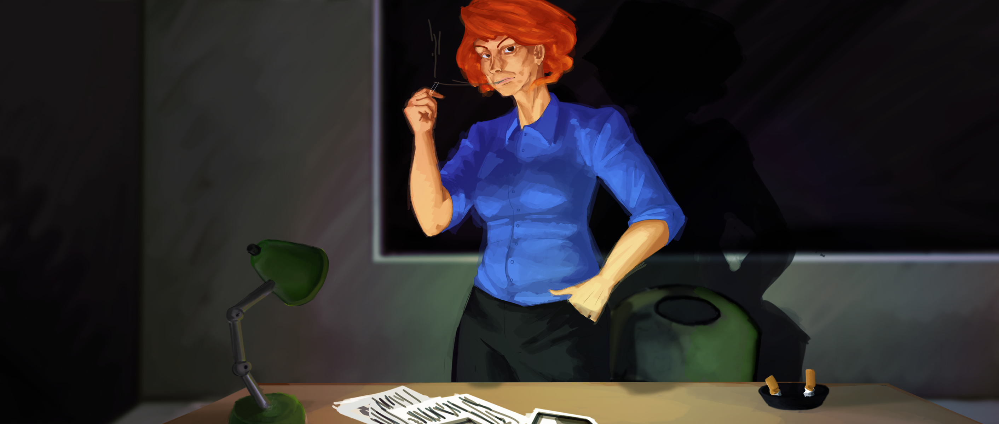
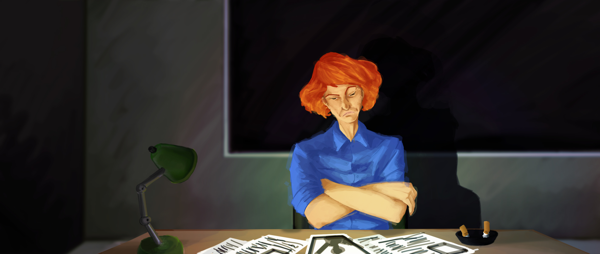

Latest art on the Interrogator!



Nirav Agrawal
Lead Programmer, Writer
A senior student studying game design at UC Santa Cruz. He enjoys playing games as much as he does designing them. He hopes to enter the game industry as an artificial intelligence specialist.
Kevin Chen
User Test Coordinator, Writer, Programmer, Sound Producer
Kevin is the User Test Coordinator and Sound Producer for Interrogation. He is currently studying at the University of California Santa Cruz, and is planning to graduate in Spring 2016 with a B.S. in Computer Game Design. Growing up in a gaming household and inspired by a family member in a well-known video game companies, Kevin hopes to pursue a career in the video game industry and be a part of something that is enjoyed by people worldwide. In his spare time, Kevin enjoys PC gaming and watching TV shows. Some of Kevin’s favorite games include Fallout 4, Bioshock Infinite, Far Cry 3, and the Half-Life series.
Cris Doi
Lead Artist
"I do art things but I also do other things like sleeping, eating, and contemplating existence. You can easily find me at a computer and occasionally on the dance floor. Looking forward to making more art for the gaming world and petting other people's pets.
Thanks For Your Time,
Cris Doi"
Kyle Cilia
Lead Producer, Lead Tester, Hardware Developer, Programmer
He entered UC Santa Cruz as a prospective Computer Science major and after taking a game design course, fell in love with the Computer Game Design major. He grew up in the small uneventful town of Half Moon Bay. Enjoys tinkering with everything and playing and making videogames.
Also has a profound sense of love for baby Guava and baby Mango.

Kathryn Coulombe
Lead Designer, Hardware Developer, Writer, Artist Coordinator, Programmer
Katie is a developer on Interrogation. She is in her fourth year at UC Santa Cruz studying Game Design. Her main focus in games is creating a novel experience that messes with the player's mind. She likes the idea of simulating stressful and disorienting experiences, and has designed Interrogation around that goal.
She hopes to continue making games that explore human experience and push video games further into the real world.